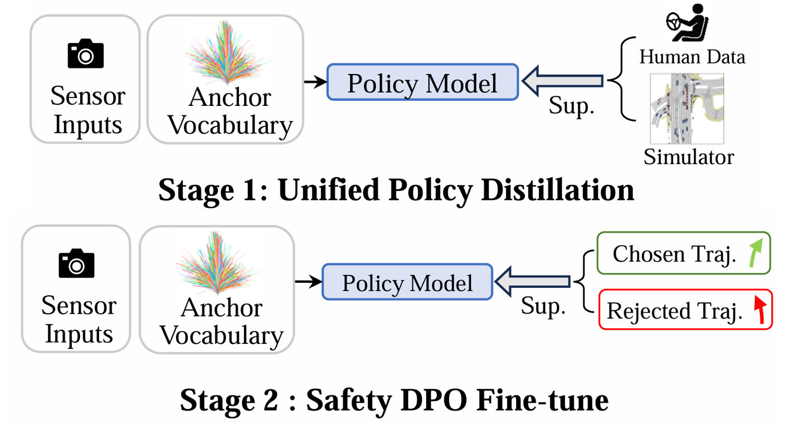
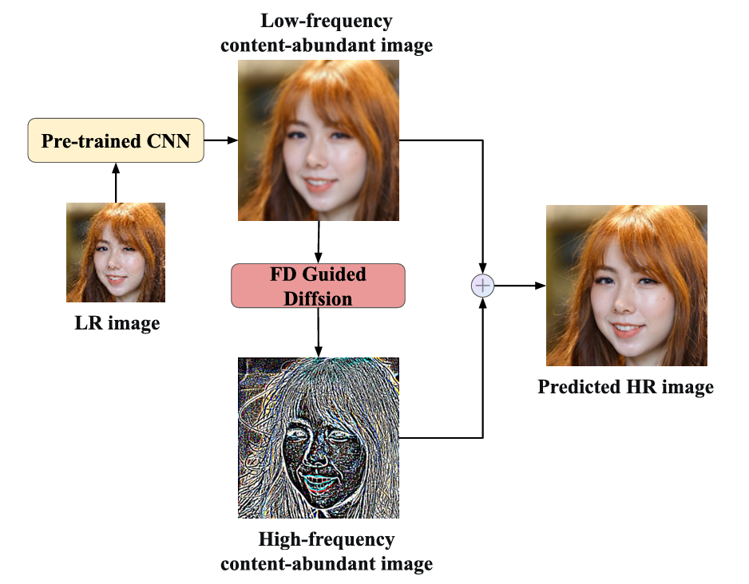
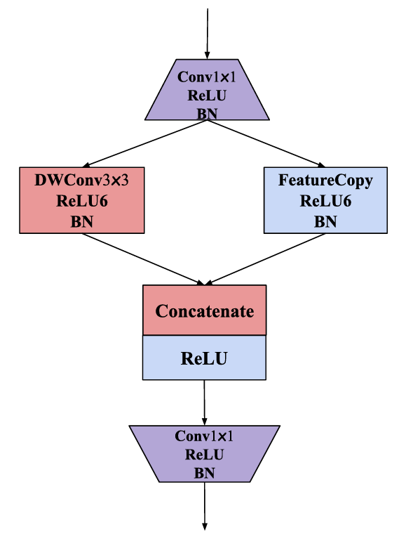
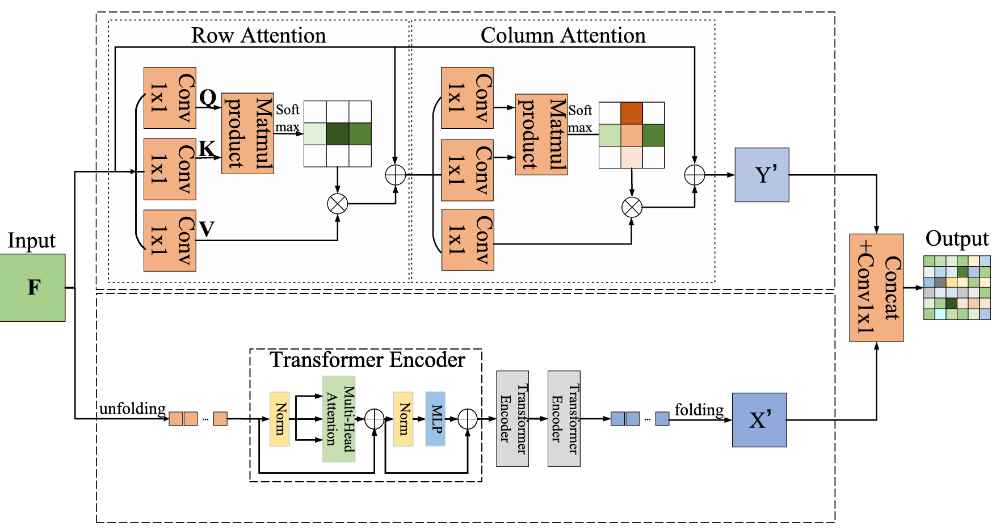

|

|
DriveDPO: Policy Learning via Safety DPO for End-to-End Autonomous Driving
Shuyao Shang, Yuntao Chen, Yuqi Wang, Yingyan Li, Zhaoxiang Zhang†
NeurIPS, 2025
A Safety-DPO policy learning framework that unifies policy distillation and trajectory-level safety preference alignment.
|
|

|
ResDiff: Combining CNN and Diffusion Model for Image Super-Resolution
Shuyao Shang, Zhengyang Shan, Guangxing Liu, Lunqian Wang, Xinghua Wang, Zekai Zhang, Jinglin Zhang†
AAAI, 2024
A hybrid approach that guides diffusion in the residual space relative to a CNN
prediction to improve high-frequency detail.
|
|

|
Faster and Lighter Meteorological Satellite Image Classification by a Lightweight Channel-Dilation-Concatenation Net
Shuyao Shang, Jinglin Zhang, Xing Wang†, Xinghua Wang, Yuanjun Li, Yuanjiang Li
IEEE J-STARS, 2023
A Channel-Dilation-Concatenation network structure to reduce parameters and inference
time while retaining accuracy.
|
|

|
CTMU-net: An Improved U-Net for Semantic Segmentation of Remote-Sensing Images with Combined Attention Mechanisms
Yuanjun Li, Zhiyu Zhu, Yuanjiang Li, Jinglin Zhang, Xi Li, Shuyao Shang, Dewen Zhu†
IEEE J-STARS, 2023
Enhances U-Net for remote-sensing segmentation via combined attention.
|
Education
-
Ph.D. Candidate, Institute of Automation, Chinese Academy of Sciences,
Beijing, China
(Sept. 2024 – Present).
-
B.Eng., Shandong University, China
(Sept. 2020 – Jun. 2024) (GPA 93.02/100, rank 2/104).
|
Awards & Achievements
- National Scholarship, Shandong University.
- Outstanding Graduation Thesis & Outstanding Graduate, Shandong University.
|
|
{kind=link}